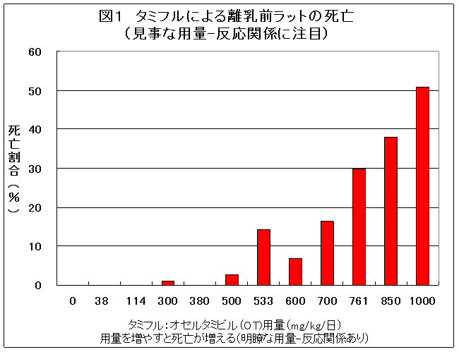
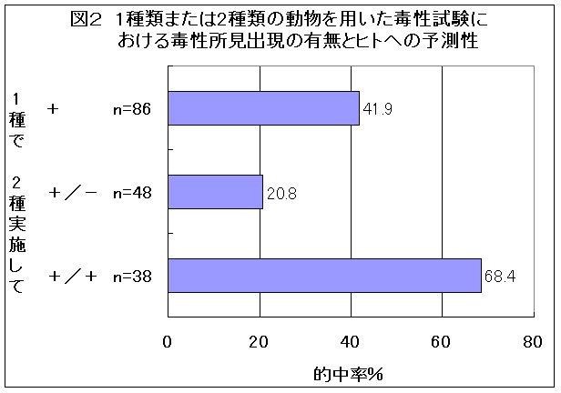

厚生労働省（厚労省）の安全対策調査会は2009年6月16日、異常行動後の事故死や突然死が問題となっているタミフルについて、10代への使用を原則禁止としている現在の措置を継続するとの結論をまとめた。
大きな根拠となるはずであった１万人規模の疫学調査（廣田班報告）に関しては、疫学および統計学の専門家から、その解析方法の妥当性に異論が出され、廣田班報告の解析結果で因果関係に明確な結論を出すのは困難と考えられた。廣田班の解析の一部で、10代で飛び降りなどの重大な異常行動が有意ではなかったがリスクを高めている可能性も否定できないデータが出たことなどが考慮された。
また、10代への原則禁止の措置の後は異常行動後の死亡事故が報告されていないことなども根拠とされた。
「突然死」については、これまでと同様、数々の関連を示すデータがありながら、すべて無視され、因果関係が否定されてしまった。ただし、低体温については、動物実験で、臨床用量近くで発生しているため、また、動物でのジャンプダウン行動や、他薬剤と併用での精神神経症状の発現については、引き続き関連研究を注視すべきとしている。
疫学調査の解析を担当した研究班の班長廣田良夫氏（大阪市立大学教授、公衆衛生学）も参考人の一人であったが欠席した。
臨床ワーキンググループ（臨床WG）の報告のなかで、責任者の鴨下重彦氏（国立国際医療センター名誉総長）は、「廣田班の解析方法の妥当性に関して、疫学および統計学それぞれの専門家から異なる意見があり、データの収集、分析にかかわるさまざまな限界を踏まえると廣田班報告の解析結果のみで、タミフルと異常な行動の因果関係に明確な結論を出すことは困難であると判断された」とのワーキンググループの判断を述べた。
「廣田班の解析方法の妥当性」に関して、どういう異論があったのか、その肝腎の内容は上記では述べられていない。しかし、2008年12月4日に開催された日本臨床薬理学会のシンポジウムで批判的な意見を述べた吉村功氏（東京理科大名誉教授：生物統計学）が臨床WGのメンバーとして参加し、当日の安全対策調査会の参考人として参加し、意見を述べた（後述）ことから、廣田班の「全体ではタミフル群が非タミフル群に比較して有意に異常行動が少なかった」との結果を出した集計方法そのものの妥当性が問題視された模様である。
鴨下氏の報告の後、参考人として参加した統計学や疫学の専門家からそれぞれコメントがあった。
吉村功参考人は、臨床WGにおける検討結果で「異なる意見」と記載されていることに関して、「これは、別のやり方での解析をする余地があるということで、これまで集積されている情報を公開して再検討するのが望ましいと考える」と述べた。広津千尋参考人（明星大学理工学部教授：生物統計学）は、「2007年12月の会議のときから、問題を指摘してきたが、廣田班の解析方法が唯一だというわけではない。再検討をしてはどうか」。柳川洋参考人（自治医科大学名誉教授：公衆衛生学・疫学）は、「疫学は数学のようには単純にはいかず、いろんな解析がありうる。とはいえ、論文や学会で多くの専門家から問題点を指摘されている。再解析が必要だ」と述べた。
このように、参考人として参加した３人の統計学・疫学専門家から、控えめではあるが異口同音に、廣田班の解析方法とは別の解析方法があること、廣田班の解析結果では適切な判断が困難であるため、情報を公開して再解析が必要であることが述べられた。
厚生労働省（厚労省）のこうした調査会・審議会において、これほどの批判が行われることは異例のことと言えよう。廣田氏自身が参考人に名前を連ねながら、出席しなかったのは、このような批判を予測したからかも知れない。
廣田班の最終解析結果では、全体での異常行動は、非タミフル群に比してタミフルで有意にオッズ比が低く、10代の重大な異常行動に限定すればリスク（オッズ比）は1.54倍だが、95%信頼区間の下限は0.09で全く有意とはいえない数値であった。
にもかかわらず、臨床WGの報告や、調査会の意見取りまとめの事務局（安全対策課）案で、「10代の重大な異常行動に限定すればリスク（オッズ比）は1.54倍になるとの数値が示された」と、「1.54」という具体的な数値を示したのは、10歳代へのタミフル使用制限を継続する根拠となりうるデータが必要であったのであろう。
しかし、この1.54という数値は、その95%信頼区間の下限が0.09と低く全く根拠にならない。そのため、このようなデータをなぜ載せるのかとの臨床医の参考人からの異論はある意味で当然であった。また、統計学や疫学の専門家、事務局が説明し切れないのは当然であった。結局、臨床医らの主張で押しきられ、「10代の重大な異常行動に限定すればリスク（オッズ比）は1.54倍になるとの数値が示された」は削除された。
「10代の重大な異常行動に限定すればリスク（オッズ比）は1.54倍になる」というのは、廣田班解析の中で、タミフルが異常行動を増加させうることを示唆する唯一のデータである。３人の統計学者や事務局サイドが、このデータを無理やり入れようとした意図は次のようなものであろうと推察する。
廣田班解析の全面批判をすれば、臨床医らへの反論は簡単だが、全面的に批判して適切な解析をすれば、10歳未満にも規制を広げなければならなくなるため、厚労省としてはそれもできない。しかし、こうした中途半端な態度のため、臨床医の反対にあって、あえなく撤回となった。
タミフルと異常行動との関連に関しては、何とか完全否定されずに済んだ。しかし問題の多くは解決していない。突然死の可能性について、「否定しえない」との議論すらなく、ほとんど完全否定されてしまったからである。
基礎ワーキンググループ（基礎WG）の責任者である大野泰雄氏（国立医薬品食品衛生研究所副所長）は時々言いよどみながら、説明をした。矛盾だらけであるため、説明がし辛かったのであろう。
臨床WGの報告には統計学や疫学専門家からの問題指摘があったが、基礎WGが報告した点に関して、調査会委員（３人）と約20人出席していた参考人の誰一人として一言の質問もコメントもなかった。
もしも発言が許されたなら、山ほど言うべきことがあったのだが、残念である。
基礎的問題点の全てを書こうとすると速報性がなくなるので、とりあえずここでは、突然死と最も関連の深い毒性試験の死亡についてのみ触れ、基礎WGの他の問題点は機会を改めて論じたい。
毒性試験の死亡について、基礎WGの報告書では次のように述べられている。「788mg/kg以上の用量を投与した幼若動物において、低覚醒、振戦、けいれん、体姿勢の変化、呼吸異常、粘膜および皮膚の蒼白化、自発運動の減少などが認められた。申請者（メーカー）は、このような変化の認められた動物のほとんどが、その後死亡したことから、それらが瀕死状態に関連する症状であると考えていた。しかし中枢性や呼吸器系の作用により死んだのか判断は困難である。基礎WGではこれら症状と死亡との関連について考察するため、症状の時間的経過を含む、より詳細なデータを（メーカーに）求めたが、得られなかった。ただし、これらの症状や死亡は、いずれも臨床用量（オセルタミビルとして2mg/kg）の250倍以上の高用量で認められたものであり、臨床での異常行動や死亡に関連付けることは困難と考えている」とした（（ ）内は筆者注）。
これは、図１に示した動物実験の結果について述べたものである。承認前に、離乳前の幼若ラットを用いた３つの主な毒性実験がなされていた（図の0、38、114、380、533、761mg/kgがそうである）。
2007年４月に因果関係の見直しが始まって後、離乳前のラットに対するオセルタミビル（OT）の毒性試験がさらに詳細に実施された。オセルタミビル（ＯＴ）用量として、0，300，500，600，700，850，1000mg/kg（リン酸オセルタミビル(ＯＰ)として、それぞれ0，394，657，788，920，1117，1314mg/kg）が投与された実験が追加された。
この実験結果の情報開示を求めたが開示されない。正規に公表された情報では、300mg/kgで１匹、500mg/kg以上群で複数の死亡があったことがわかっているだけで、各群で何匹が用いられ、何匹が死亡したのか、症状についても瀕死以外詳細は不明であった。死亡動物の肺水腫や脳浮腫も不明であった。
今回、調査会の場で配布された基礎WGの報告ではじめて、「瀕死の症状」とは「低覚醒、振戦、けいれん、体姿勢の変化、呼吸異常、粘膜および皮膚の蒼白化、自発運動の減少など」であるということが判明した。
これらの症状は、承認前の実験で記録されている症状と同じである。
伝え聞いた情報を元に、これまで公開されている実験データを総合して、用量別に死亡率を求めたのが、図１のグラフである。新たな実験では各群ほぼ100匹が用いられていたことも判明している。
用量-反応関係が極めて明瞭である。やや突出している533mg/kg群は動物数が14匹と少ない（対照群は250匹、他のタミフル群は１群100匹前後である）。これを考慮すると、これほどまでにきれいな用量反応曲線はむしろ珍しいくらいである。
用量-反応関係が明瞭であることから、これら赤ちゃんラットの死亡はタミフルで生じたことは間違いない。これは、だれも否定ができない事実である。これを出発点に、タミフルと人での死亡と関連について検討する必要がある。
成熟ラットは1522mg/kgのタミフル投与量でも１匹も死亡しなかったのに、赤ちゃんラットではその3分の2に過ぎない1000mg/kgで半数が死亡し、見事な用量-反応関係があった（タミフルを使わない対照群のラットでも250匹中１匹も死亡せず）。
成熟ラットと赤ちゃんラットとの最大の違いは、赤ちゃんラットの血液中濃度が成熟ラットの数倍になり、脳中濃度（ピーク濃度）は成熟ラットの約60倍となることである（濃度の曲線下面積AUCでは、約30倍であったが、新たな実験でも20〜30倍であることが再確認されている）。
赤ちゃんラットで血中濃度が著しく上昇する理由は肝臓での代謝が未熟なためであり、脳中濃度が著しく上昇するのは、血中濃度が数倍以上に上昇しているうえに、血液-脳関門の未熟のために脳中への移行が約10倍程度まで多くなるからであることも分かっている。
人の乳児も赤ちゃんラット同様に、肝臓でのタミフルの代謝能力や、血液-脳関門の機能が未熟である。インフルエンザにかかると症状が強いときには高サイトカイン血症となり、その際にも、一時的に肝臓でのタミフルの代謝能力や、血液-脳関門の機能が低下する、いわば赤ちゃんラット状態になる。
そうすれば、健康成人の脳中濃度の何十倍もの濃度となりうることが推定されるのである。少なくとも、その可能性を考え、危険でないかどうかを考える必要がある。
低覚醒（睡眠）、自発運動の減少（運動緩徐）、体姿勢の変化（失調）、低体温、虚脱、蒼白（粘膜および皮膚の蒼白化）、呼吸緩徐、呼吸不規則（呼吸異常）、振戦、けいれん、チアノーゼ、剖検時の肺水腫など、各実験で少しずつ記述は異なるが、死亡に至る際の症状は、基本的には共通している。しかも、マウス、ラット（7日齢、14日齢）、マーモセット、ウサギ（周産期の母体、新生児4日以内）と４種類の動物で共通している。
1種類の動物で毒性実験をして現われた毒性と同じ毒性が人にも現われる確率は42％とされている(鈴木哲哉、内科医と医原病、医学書院1968年：図２)。
そして、もう1種類の動物を追加して、別の種類には現われなかった場合には、その毒性が人に現われる確率は21％に低下する。ところが、別の動物にも同じ毒性が現れた場合には、その毒性がヒトに現われる確率は68％に上昇すると報告されている（図２）。
それでは、３種類、４種類で共通して現れたらどうであろうか。しかも、赤ちゃんラットの実験では４回も繰り返して、同じ毒性兆候が再現されている。このように再現性のある毒性症状が、条件によっては人に現れないと、だれが否定できるのであろうか。
これだけ多数の実験をし、多数の動物を犠牲にするのは、人で現れる症状を推測するためである。しかも、これだけ毎回多数の動物を用いて実験して同じように現れた中枢抑制の症状が、人でも現れると考えて学ばなければ、死んだ動物に申し訳ないではないか。
低体温については、マウスに経口で30mg/kgを投与して低体温が生じており、体表面積換算で臨床用量近くであることから因果関係がありうるとの解釈をとっている。低体温の比較の際には、「体表面積換算」を用いているのに、死亡では換算に体重を用い、体表面積を用いないのは不可解である。
死亡動物は、死亡前に、運動が鈍り、睡眠したり、低体温を生じるなど中枢抑制症状が生じている。その延長線上で、呼吸異常（呼吸緩徐、不規則）が生じて、チアノーゼ、けいれん、虚脱を生じて死亡している。そして、剖検では、肺水腫が生じている。心不全や心臓の形態異常は報告されていないので、この肺水腫は非心原性であり、呼吸抑制に伴う低酸素血症によるものといえる（チアノーゼがよい証拠である）。
したがって、高用量群だけでなく、低用量群のタミフル群に表れた死亡についても、タミフルが原因で死亡したとみることができる。
これまでの実験からは、赤ちゃんラットが死亡しなかった用量は114mg/kgであった。低体温の比較の際に基礎WGで採用した「体表面積」による換算をすると、人では約20mg/kgに過ぎない。この用量は、たとえば、体重6〜7kgの4か月児の推奨用量1日40mg（すなわち6mg/kg/日）のたかだか3倍にすぎない。きわめて臨床用量に近い用量である（成人との換算では13mg/kgとなり、１日量2mg/kgとの違いは6倍となる）。